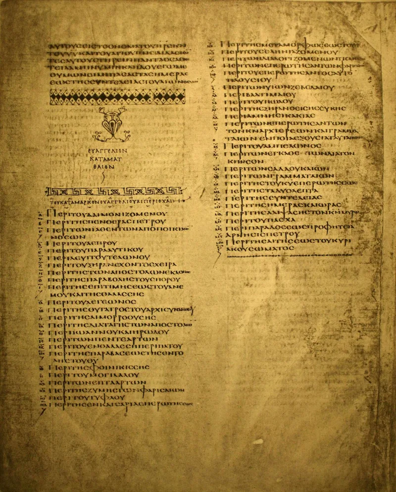
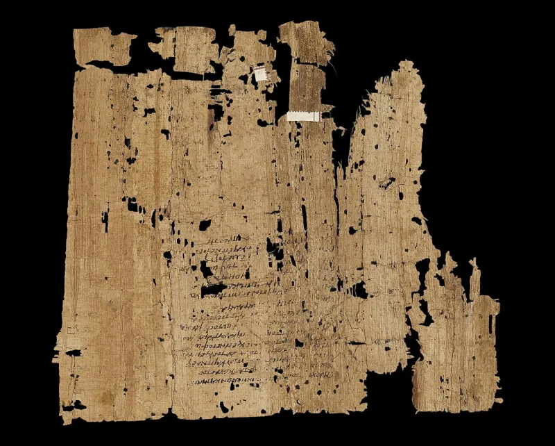
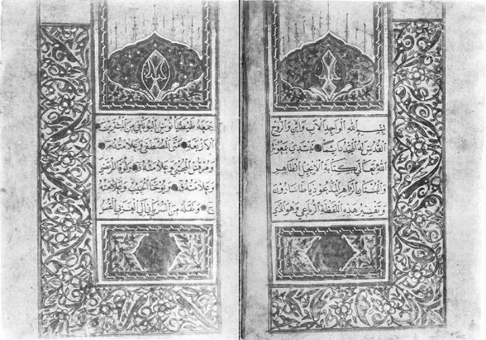

No good counter-argument has been published by Muslim scholars.
The Quran speaks of the Injil as one book Allah gave to Jesus (Quran 5:46; 57:27). Mainstream Islam says it was later lost or corrupted.
On that account the four Gospels are unreliable human leftovers.
No trace of such a book exists. No manuscript.
No fragment. No quotation by any ancient writer, friendly or hostile, in the seven centuries between Jesus and Muhammad.
From the earliest records, gospel meant the message about Jesus, and the written gospels are accounts about him.
The Quran closes the exit itself. Quran 5:47 commands the People of the Gospel to judge by what Allah revealed in it.
That is a present-tense order given between 610 and 632 AD. It assumes a book then in Christian hands — and that book was the fourfold Gospel, complete in 4th-century codices.
Two lines are given, and they do not agree with each other. IslamQA holds that the original Injil was Allah's spoken revelation to Jesus, surviving partly inside the four Gospels but tangled with human narrative.
Quran 5:47 then means: judge by what remains genuine. The other line is revisionist.
V. A. Mohamad Ashrof, a Muslim writer, calls the lost book a myth. On his reading the Quran's Injil simply is the Gospel Christians held, and the corruption verses concern misreading — which Gordon Nickel's work on early tafsir supports.
Strong for you, because the two answers cancel each other. The lost-book view has no historical evidence at all.
The revisionist view fits the text better, but it authenticates the very Gospels the Quran contradicts. There is no third option, and no one has ever produced, dated or quoted the real Injil.
"Has anyone ever shown you a page of the Injil? I would genuinely like to see it."



They say the Injil was Jesus's own message, lost early, and partly kept in the Gospels.
There are two lines, and they do not fit together. The mainstream one, from IslamQA, holds that the original Injil was Allah's spoken revelation to Jesus, carried in his preaching. It survives in part inside the four gospels, but tangled with human narrative, which is tahrif, corruption. Quran 5:47 then tells Christians to judge by what remains of the true revelation inside their books. No separate manuscript should be expected, since it was lost early. That loss is the whole reason the Quran was sent.
The other line is revisionist. V. A. Mohamad Ashrof and other modernists grant that the lost-book thesis is a myth. On that view, the Quran's Injil simply is the gospel held by 7th-century Christians, treated as holding true revelation. The corruption verses then aim at misreading and hiding, not at textual loss. Gordon Nickel's work on the early tafsir supports that reading.
Strong for you: the two Muslim answers cancel each other out.
The dilemma survives because the two Muslim answers refute each other. The lost-original view has no historical evidence at all. No source in any century attests a revealed book given to Jesus. It is read backward from the Quran's assumption that every prophet gets a book.
The revisionist view fits the Quranic data far better, and it has early-tafsir support. But it pays for that by authenticating the four gospels Christians actually held in 610 AD. Their text is fixed by 4th-century codices. And they teach the incarnation, the crucifixion and the resurrection that the Quran denies.
There is no third option. Fourteen centuries on, no Muslim can produce, describe, date or quote the real Injil. This may be the sharpest internal problem in the Quran's dealings with Christianity.